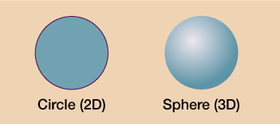
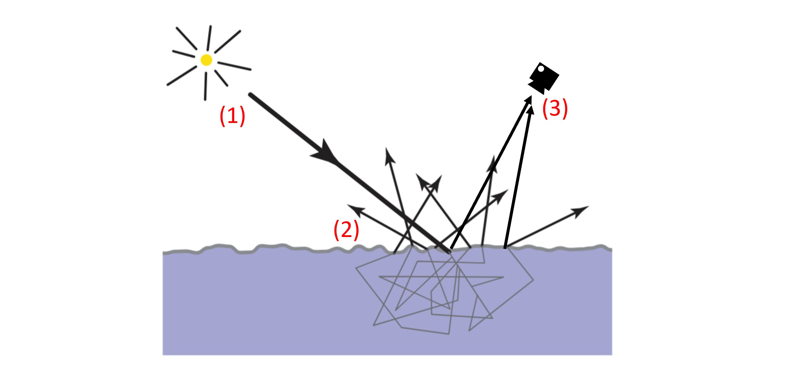
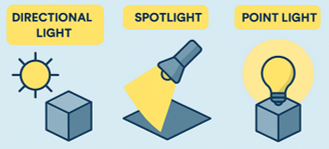
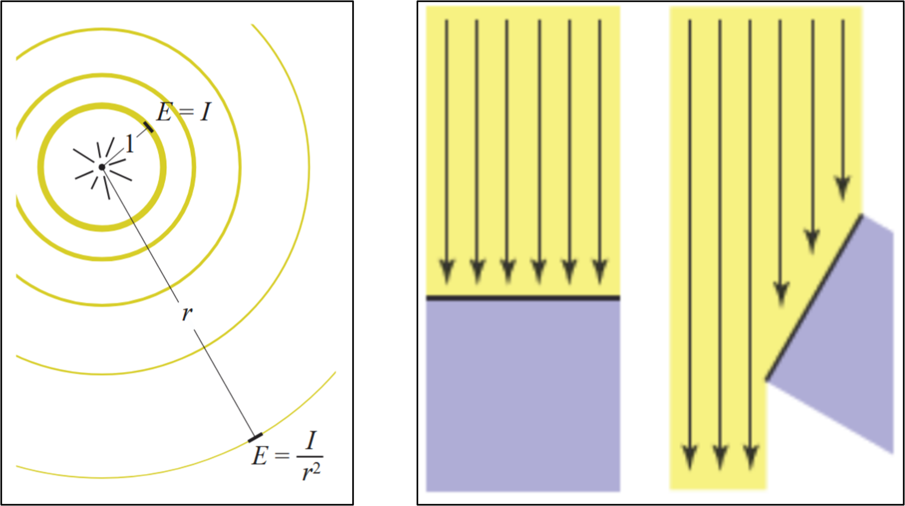
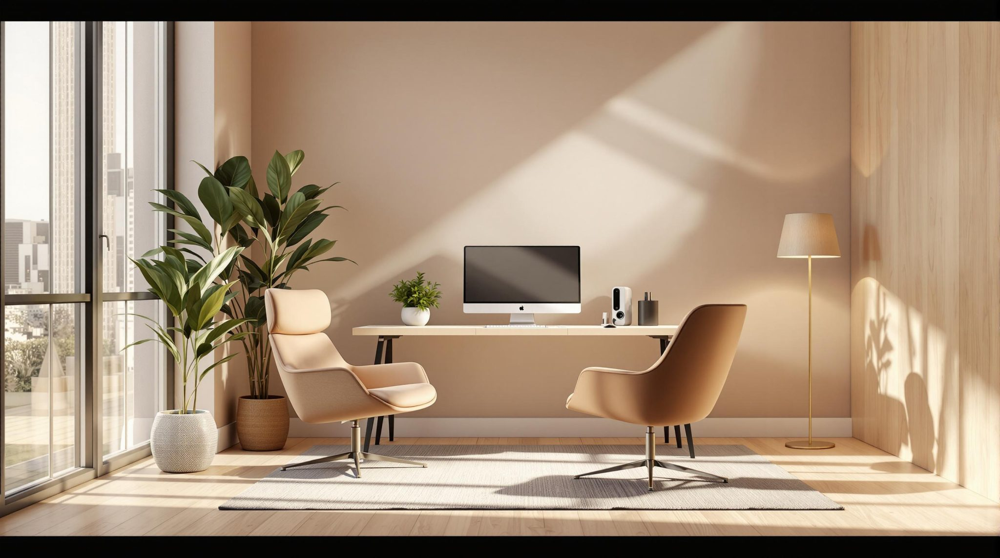
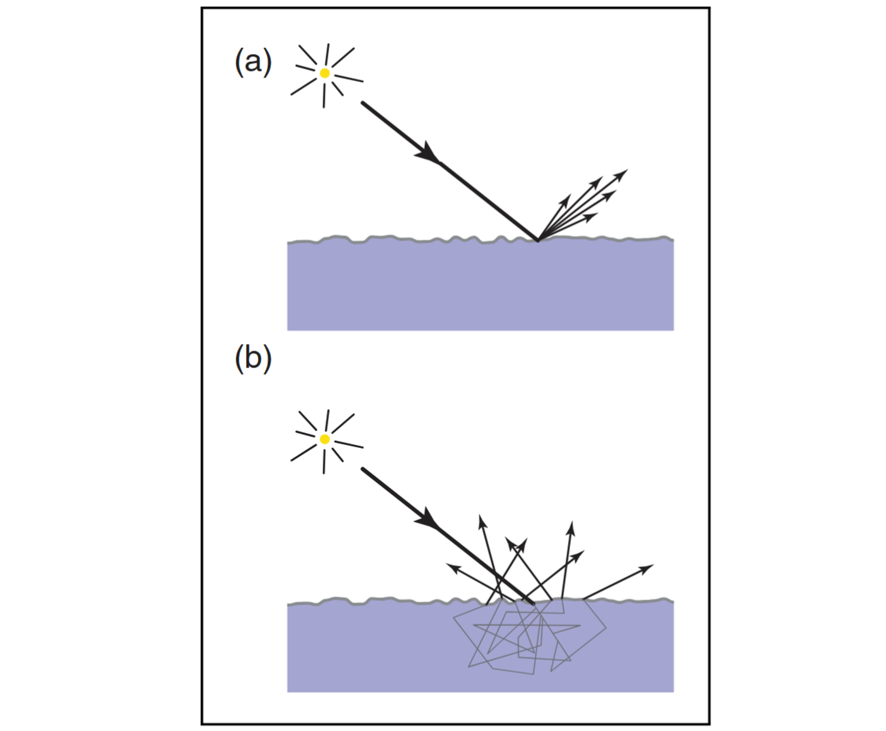
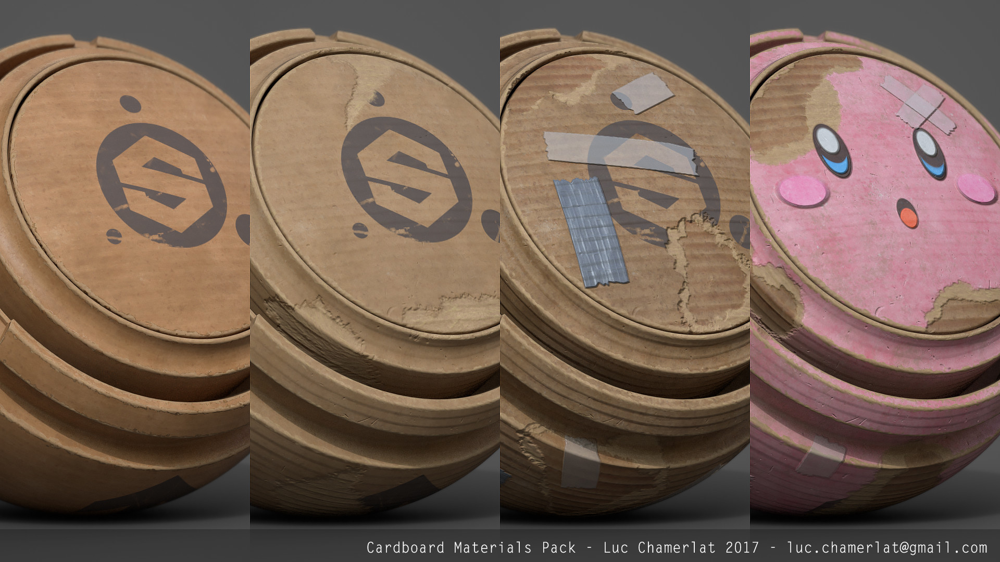
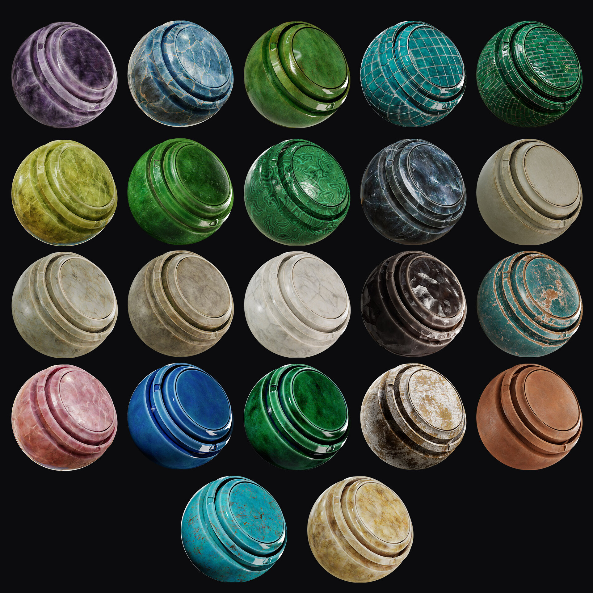
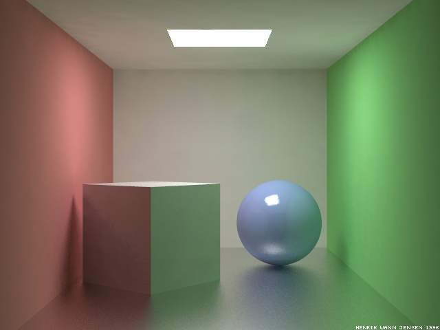
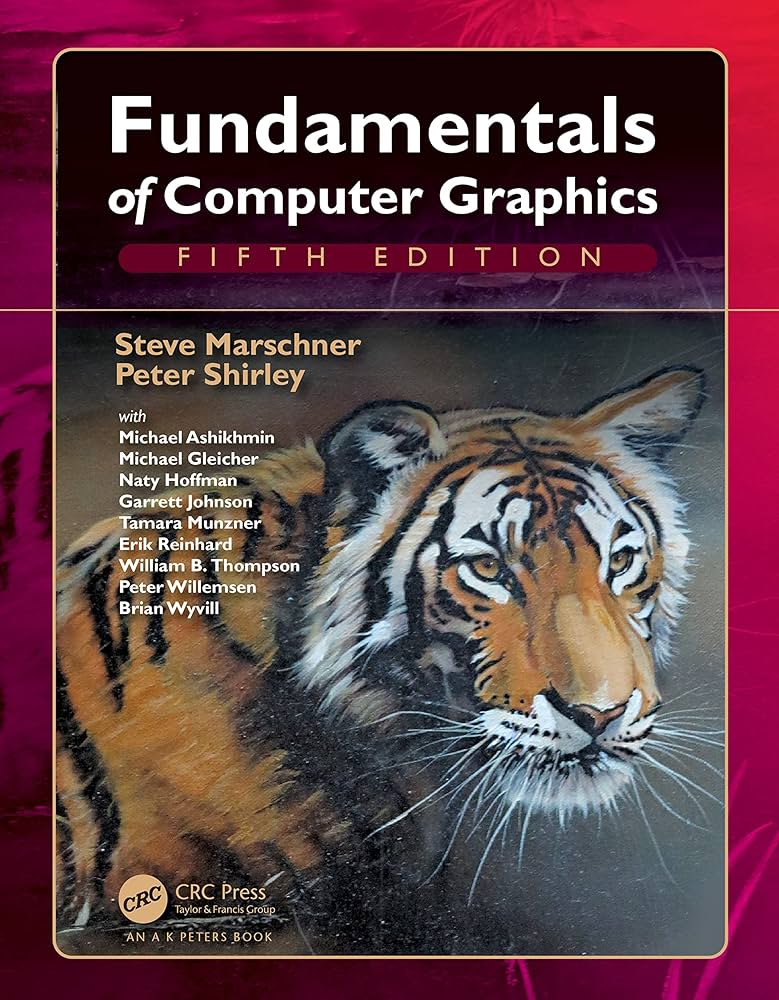

Clase 04 - Después de esta clasel@s alumn@s pueden inspeccionar y modificar coordenadas UV, identificar distorsión y solapamientos, y explicar cómo mapas de normales y altura afectan la apariencia de una superficie sin cambiar su geometría.
Clase 05 - Después de esta clasel@s alumn@s pueden explicar el modelo de iluminación Lambertiano, identificar sus parámetros, y razonar cómo la interacción entre luz y material determina el color observado.

Surface Shading
Al renderizar imágenes de una escena 3D, el sombreado de las superficies es un factor clave para la sensación de tridimensionalidad.
Este depende de forma forma de la superficie y de su relación con otros objetos en la escena.
Shading Model
La ecuación utilizada para calcular el color se conoce como modelo de sombreado (shading model). Existen muchos modelos, desarrollados para distintas aplicaciones. En general, todos buscan aproximar la física de la reflexión de la luz.

(1) La luz es emitida por el sol u otras fuentes (naturales o artificiales).
(2) La luz interactúa con los objetos en la escena: una parte se absorbe y otra se dispersa y se propaga en nuevas direcciones.
(3) Finalmente, la luz es captada por un sensor (ojo humano, sensor electrónico o película).

Fuentes de Luz
En el mundo real, la luz viene de todas las direcciones.
Pero para modelar iluminación, el caso más simple es simular que la luz viene de una dirección en particular.
Directional Light (🌞): La fuente de luz se asume tan lejana que todos los rayos llegan en direcciones paralelas. Por ello, ilumina todas las superficies de manera uniforme, sin depender de la distancia.
Spot Light (🔦): La fuente de luz emite en una dirección específica, formando un cono de iluminación. Solo las superficies dentro de ese cono reciben luz, y la intensidad suele disminuir hacia los bordes y con la distancia.
Point Light (💡): La fuente de luz es lo suficientemente pequeña como para tratarse como un punto en el espacio. Al estar cerca de los objetos, la iluminación varía según la distancia y la orientación de cada superficie.

Irradiance
Se le llama irradiancia (E) a la cantidad de energía luminosa que llega a una superficie por unidad de área.
- Para un point light, la irradiancia disminuye con la distancia (E ∝ 1/r²);
- Para un spot light depende además si el punto está dentro del cono, y suele disminuir hacia los bordes.
En todos los casos la irradiancia depende del ángulo entre la luz y la superficie (más directa → más energía recibida).

Directional light desde afuera que es el sol, una spot light en la lampara y desde arriba
Criss
El sol (directional), la lampara (spot) y un tragaluz arriba (directional)
a
Hay una luz direccional del sol, hay un point light en la lampara de la esquina y también hay una luz en el techo
Seba
La lámpara y el sol
Hans
Sol (terraza y tragaluz?), lampara de pie
Vicente
Materiales
Ya sabemos cómo describir cuanta luz le llega a los objetos (irradiance), ahora tenemos que modelar cómo interactúa la luz con la superficie.
Fundamentalmente, todas las interacciones luz-materia son el resultado de dos fenómenos: dispersion y absorción.
- Dispersión: cambia la dirección de la luz, pero no la cantidad de luz. Sucede cuando la luz encuentra cualquier discontinuidad en el material.
- Absorción: algo de la luz que llega es convertida a otro tipo de energía, reduciendo la cantidad de luz pero no su dirección.

Dispersión en la superficie
La superficie dispersa la luz en dos grupos de direcciones: hacia fuera de la superficie (reflexión) y hacia dentro (refracción o transmisión).
La luz que va hacia adentro puede pasar por varios eventos de dispersión y absorción hasta algo de la luz es reflejada.
(a) Reflexión especular: representa la luz que fue reflejada en la superficie del objeto.
(b) Reflexión difusa: representa la luz que pasó por transmisión, absorción, y dispersión en el interior antes de ser reflejada.

Lambert Reflection
Modela el tipo de superficie que refleja luz en todas las direcciones por igual, independiente de la dirección de entrada. Se le conoce como superficie difusa perfecta.
Su color es independiente del punto de vista, y está completamente definido por la reflectancia (fracción de la irradiancia que refleja).
Examples: https://www.artstation.com/artwork/9g4wq

Specular Reflection
El componente especular representa el “brillo” que vemos en una superficie cuando refleja la luz de forma concentrada.
Hay muchos modelos para este tipo de superficie, pero el más simple es el Modified Blinn–Phong. Este modelo calcula el brillo especular basándose en tres vectores principales:
l (dirección de la luz): indica desde dónde llega la luz hacia la superficie.
n (normal de la superficie): es un vector perpendicular a la superficie en el punto que estamos evaluando.
v (vector de vista): apunta desde la superficie hacia la cámara, es decir, hacia el observador.
La especularidad es máxima cuando el observador está mirando exactamente en la dirección en la que la luz se reflejaría como en un espejo. Si el observador se aleja de esa dirección, el brillo disminuye progresivamente.
Espejos son superficies especulares perfectas, pero nuestro modelo simple no puede modelar este tipo de superficies.

La esfera tiene especularidad alta, y el cubo tiene poca especularidad, pero se nota que refleja los colores de las murallas
Seba
una esfera muy especular que hace parecer como si fuera una canica, un cubo no tan especular, unas paredes poco especulares y un piso medo especular que refleja colores pero no tanto formas
a
Esfera con alta especularidad y caja con baja especularidad (al igual que las paredes)
F
paredes (especularidad ~0) suelo (baja especularidad) esfera (alta especularidad)
Vicente
Iluminación Ambiente
No todas las fuentes de luz pueden ser modeladas como puntos. Por ejemplo, el cielo o la luz que rebota dentro de una habitación no se pueden localizar en un solo punto. Estos tipos de luz pueden modelarse con gran detalle, pero para el coloreado básico queremos una aproximación simple.
Para esto asumimos que existe una luz ambiente que es igual en todas las direcciones y posiciones de nuestra escena.
Además asumimos que es sólo reflejada difusamente (ya que no tiene dirección).
Experimenta libremente cambiando la configuración de luces y materiales
Luces: qué pasa si cambiamos el color o intensidad?
Materiales: qué pasa si cambiamos el color o especularidad?

Fundamentals of Computer Graphics | Capitulo 5 - Surface Shading
Este libro está en biblioteca y está disponible electrónicamente via biblio y también vía 🏴☠️. Intenten usar la opción de biblioteca #support-your-library
Ediciones más antiguas también sirve.
Real-Time Rendering | Capitulo 5 - Visual Appearance